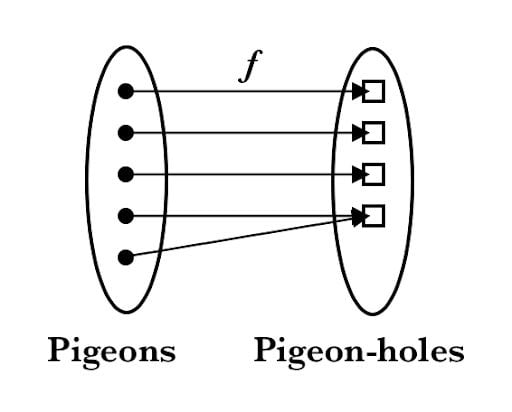

Pigeonhole Principle

Learning the pigeonhole-principle is fascinating and it really made me realize the importance of thinking outside the box when solving problems. The pigeonhole principle states that if you have more "pigeons" than "pigeonholes," then at least one pigeonhole must contain more than one pigeon. This may seem like a simple concept, but it has broad applications in various areas of mathematics and computer science
Pigeonhole principle follow Follows an obvious observation: If you have n pigeons in k pigeonholes and if n > k then there is at least one pigeonhole that contains more than one pigeon.
The generalized pigeonhole principle extends the idea of the original principle to allow for a more flexible application. It states that if n items are placed into m containers and n > m, then at least one container must contain ceil(n/m) items.
k + 1 = [(n-1)/m] + 1 = [n/m]
With this, we can solve interesting problems like a problem of, show among 100 people there are at least 9 who were born in the same month.
To use the pigeonhole principle, first find the objects and containers. Suppose that for each month, we have a container that contains persons who were born in that month. The number of containers is 12 and the number of objects is 100. By the generalized pigeonhole principle, at least one of these containers contains at least ⌈100/12⌉ = ⌈8.333⌉ = 9. So, there must be at least 9 people who were born in the same month.
This is only one of the example, pigeonhole is all-encompassing. For example, consider a classroom with 25 students and 24 available seats. If the students were to each choose a seat, at least one seat would have to be occupied by two students. This demonstrates the practical application of the pigeonhole principle in a common setting. Similarly, in a game of bingo where there are fewer numbers called than there are spaces on the card, it guarantees that at least one player will have all the called numbers on their card. The diagram below visualize how this works.
